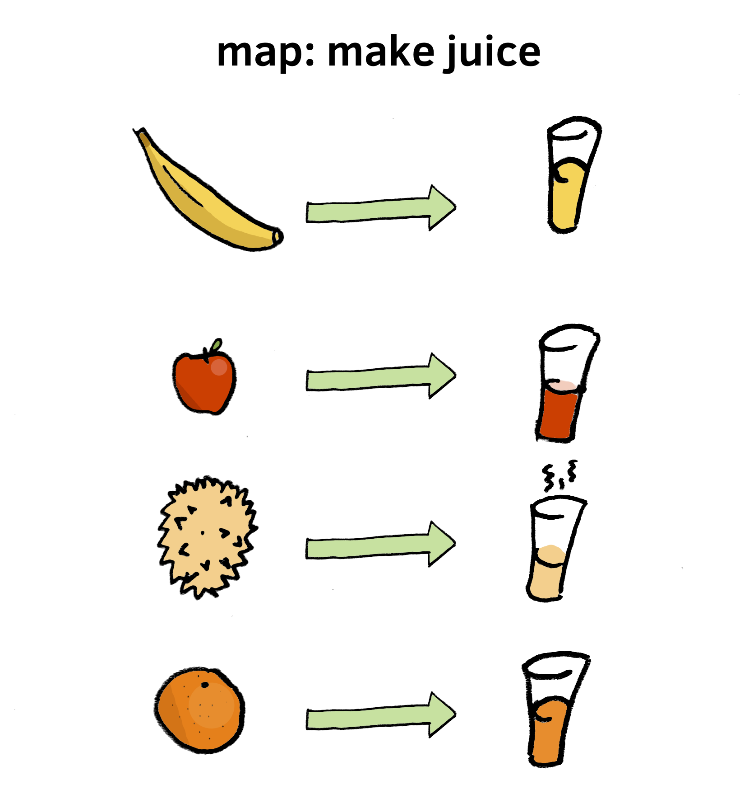
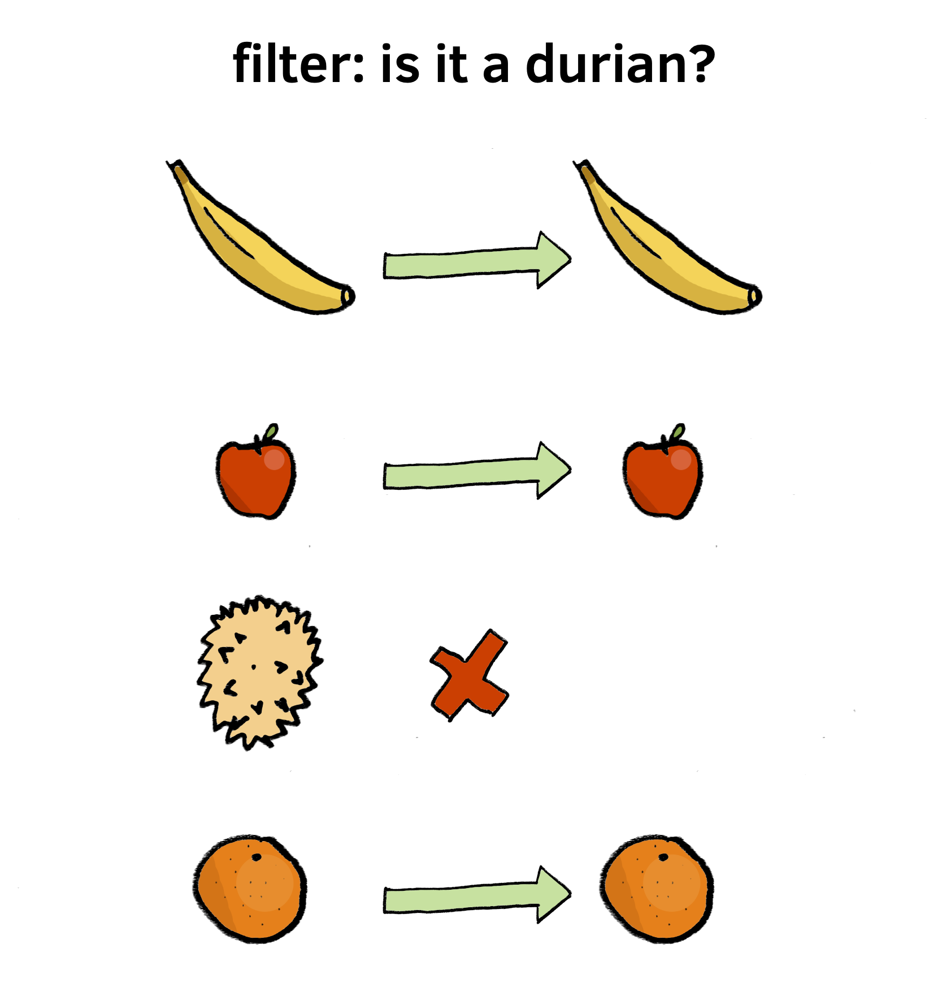

beyond the for loop
@tmcw / Tom MacWright / Mapbox
this is a topic that’s close to my heart because it’s fundamental, difficult, and subtle: something as simple as a loop can expressed in vastly different ways. knowing which route to take for every situation will help you write straightforward code that reflects your ideas.
loops are one of the bits of fundamental magic in programming
if { } else { } computers can
make decisions
for (;;) { } computers can
do work
sparknotes
arrays
arrays
are collections of data
var numbers = [1, 2, 3];
arrays have a length property
numbers.length; // 3
arrays have methods
numbers.push(4);
// puts 4 into numbers
arrays contain data
var four = numbers[3];
problem one: make some animals rock
var animals = ['cats', 'dogs'];
our desire
['cats rock', 'dogs rock'];
using for
var animals = ['cats', 'dogs'];
for (var i = 0; i < animals.length; i++) {
animals[i] = animals[i] + ' rock';
}
for is a way of saying do this repeatedly
for is a classic example of the concept of 'imperative programming':
a style that emphasizes telling computers what to do. there are other
styles, like declarative programming, which is telling computers
what you want - a big example of that is SQL.
equivalent to while() { } and do { } while()
and even goto
for loops have three basic elements
where we usually make the loop counter
for (var i = 0; i < animals.length; i++) {
where we usually check if we're done
for (var i = 0; i < animals.length; i++) {
where we usually increment the loop counter
for (var i = 0; i < animals.length; i++) {
the loop is counting from 0 to 1
is that what i'm doing?
| in | out |
cats
dogs |
cats rock
dogs rock |
i'm not counting from 0 to 1, i'm transforming data
function theyRock(creatures) {
return creatures + ' rock';
}
theyRock('cats'); // cats rock
function theyRock(creatures) {
return creatures + ' rock';
}
// feed ['cats', 'dogs'] into theyRock
daring thesis: we should do that
let's meet the family
map, reduce, filter
there are others but these are the hits
some of the others are .some(), which tells you if any element
of an array passes a test, .every(), which says if ever element does
they live
on arrays
[].filter; // there it is
for IE8 and lower use es5-shim
and weep legacy tears
some people use underscore or lodash for this. that's fine too,
but it's best to use tools that do exactly what you want: the mission
of underscore is to bring other functional programming goodies
to javascript, not to serve as a compatibility layer.
so what do they do?
map
creates a new array by calling a function on every element of an old array
that thing from earlier but with map
var animals = ['cats', 'dogs'];
function theyRock(creatures) {
return creatures + ' rock';
}
var rockinAnimals = animals.map(theyRock);
this says what it does: we are turning an
array of animals into an array or rockin animals with
a named function

it also does not change the original array,
but creates a new one
aka 'mutation', changing arrays in place breeds confusion
var animals = ['cats', 'dogs'];
function makeEmRock(animals) {
for (var i = 0; i < animals.length; i++)
animals[i] = animals[i] + ' rock';
return animals;
}
var rockinAnimals = makeEmRock(animals);
// rockinAnimals = [cats rock, dogs rock]
// animals = [cats rock, dogs rock] NOOOOOOO
var animals = ['cats', 'dogs'];
function makeEmRock(animals) {
return animals.map(function(animal) {
return animal + ' rock';
});
}
var rockinAnimals = makeEmRock(animals);
// rockinAnimals = [cats rock, dogs rock]
// animals = [cats, dogs]
filter
create a new array with only the elements that
pass a test
var animals = ['cats', 'dogs'];
var catsOnly = [];
for (var i = 0; i < animals.length; i++)
if (animals[i] === 'cats')
catsOnly.push(animals[i]);
// catsOnly = ['cats']
but we'd want to abstract the comparison because of those
cats that look like dogs because of their crazy cat show owners
doing weird haircuts or grooming or whatever
not judging, keep rocking cat show people
this is a function that returns true or false.
comparisons are values, liberate them from
if statements!
function thatsACat(animal) {
return animal === 'cats';
}
var animals = ['cats', 'dogs'];
var catsOnly = [];
function thatsACat(animal) {
return animal === 'cats';
}
for (var i = 0; i < animals.length; i++)
if (thatsACat(animals[i]))
catsOnly.push(animals[i]);
// catsOnly = ['cats']
filter to the rescue
var animals = ['cats', 'dogs'];
function thatsACat(animal) {
return animal === 'cats';
}
var catsOnly = animals.filter(thatsACat);
// catsOnly = ['cats']

like map, filter creates a new array and doesn't mess with your old one
this concept, called 'immutability', is really deep. see immutable-js
for an example of it taken to the extreme. the benefits of immutability,
besides simpler code, extend into performance and the ability to
undo changes to data.
[questions]
map
array ⇢ array of transformed values
filter
array ⇢ array of filtered values
one last kind of loop: aggregation
array ⇢ sum
reduce
given an array and a starting value, get a result by calling a function
with each element of the array and the value.
um, what?
reduce is more general than the others.
let's look at it two ways.
compute the sum of an array of numbers
var numbers = [4, 8, 15, 16, 23];
var sum = 0;
for (var i = 0; i < numbers.length; i++) {
sum += numbers[i];
}
// sum = 66
the gist: start off with a sum of 0, add each number to it
1. starting value = 0
2. add each number to current sum
3. voila!
here's the same thing with reduce!
var numbers = [4, 8, 15, 16, 23];
var sum = numbers.reduce(function(currentSum, value) {
return currentSum + value;
}, 0);
first notice the
starting value of 0,
given as the second argument
var numbers = [4, 8, 15, 16, 23];
var sum = numbers.reduce(function(currentSum, value) {
return currentSum + value;
}, 0);
this enters the function as
currentSum
var numbers = [4, 8, 15, 16, 23];
var sum = numbers.reduce(function(currentSum, value) {
return currentSum + value;
}, 0);
each loop returns a new value that is the new
currentSum
var numbers = [4, 8, 15, 16, 23];
var sum = numbers.reduce(function(currentSum, value) {
return currentSum + value;
}, 0);
so, for the first iteration it looks like
var numbers = [4, 8, 15, 16, 23];
var sum = numbers.reduce(function(currentSum=0, value=4) {
return 0 + 4;
}, 0);
and then the second
var numbers = [4, 8, 15, 16, 23];
var sum = numbers.reduce(function(currentSum=4, value=8) {
return 4 + 8;
}, 0);
and third
var numbers = [4, 8, 15, 16, 23];
var sum = numbers.reduce(function(currentSum=12, value=15) {
return 12 + 15;
}, 0);
here's another way of putting it
reduce is worth learning.
you may know reduce as fold or foldl
from other languages.
it can do all the other ones
reduce's initial value doesn't have to be a number.
what if it's an array?
remember this?
var animals = ['cats', 'dogs'];
function theyRock(list, creatures) {
list.push(creatures + ' rock');
return list;
}
var rockinAnimals = animals.reduce(theyRock, []);
and this?
var animals = ['cats', 'dogs'];
function thatsACat(list, animal) {
if (animal === 'cats') {
list.push(animal);
}
return list;
}
var catsOnly = animals.reduce(thatsACat, []);
we can even write a general 'filter' function
using reduce.
function filter(array, fn) {
return array.reduce(function(memo, value) {
return fn(value) ?
memo.concat([value]) : memo;
}, []);
}
so, use reduce always?
for what it's worth, array.splice() is basically the reduce of
mutable array functions: you can use it instead of shift, unshift,
pop, push, and slice. but nobody ever remembers the order
of arguments and the name sounds weird so they don't.
no
use map for transforming values
use filter for filtering values
use reduce for aggregating values
use for loops for performance hotspots
make sure they're hotspots first.
[questions]
chaining
made famous by $
$('div')
.css('background', 'Gainsboro')
.slideIn()
.doBarrelRoll();
this is a real color
$('div')
.css('background', 'Gainsboro')
.slideIn()
.doBarrelRoll();
it's grayish
anyway: chaining is useful for doing multiple
steps quickly without intermediate variables
thing
.function()
.function()
.function();
map and
filter return arrays
and
are functions on arrays
var rockin = ['cats', 'dogs']
.map(theyRock);
var catsOnly = ['cats', 'dogs']
.filter(thatsACat);
THEREFORE
var rockinCatsOnly = ['cats', 'dogs']
.filter(thatsACat)
.map(theyRock);
// ['cats rock']
the things that used to be in loops are now reusable
and combinable
var rockinCatsOnly = ['cats', 'dogs']
.filter(thatsACat)
.map(theyRock);
// ['cats rock']
let's talk blocks vs functions real quick
for loops are one kind of block:
for (var i = 0; i < 3; i++) {
}
blocks are in for loops,
switch statements, if / else
when you see { } but no function,
you're looking at a block.
blocks are chunks of work: the code within them might run lots of times
for (var i = 0; i < 3; i++) {
alert('annoy!')
}
or it might never run
if (false) {
alert('sad.')
}
blocks and functions both have { }
but have a big difference: scope
scope is containingness
variables are contained in scopes
this saves us from conflict.
without scope, every time you named a variable
you'd have to be sure it was the only thing
named that everywhere. that's crazy.
for instance,
function divide(a, b) {
var divided = a / b;
divided only exists here!
return divide;
}
var myResult = divide(1, 3);
divided doesnt exist here!
so variables are contained by scopes
and only functions give you scopes
but, Tom, we were just talking about
loops, why does this matter?
for loops are blocks,
map, filter, reduce are functions.
example of disaster
var numbers = [1,2,3];
var sum = 0;
// i will leave my
// important business here, yes
var importantBusiness = 42;
// copy & pasted this - me
for (var i = 0; i < numbers.length; i++) {
sum = i += numbers[i];
var importantBusiness = sum + 1;
}
importantBusiness is now equal to 6!?
o no!
variables leak out & in for loops.
another variable leaked out of that one:
var numbers = [1,2,3];
var sum = 0;
// i will leave my
// important business here, yes
var importantBusiness = 42;
// copy & pasted this - me
for (var i = 0; i < numbers.length; i++) {
sum = i += numbers[i];
var importantBusiness = sum + 1;
}
// i = 16
now see the functional version
// i will leave my
// important business here, yes
var importantBusiness = 42;
var numbers = [1,2,3];
var sum = numbers.reduce(function(current, value) {
var importantBusiness = current + 1;
return current + value;
}, 0);
importantBusiness = 42; still! phew.
leak-free! the variables current and value
are contained within the function, and when we talk about
importantBusiness, it refers to the variable in function
scope, so the other one isn't affected.
having scopes also fixes this problem:
for (var i = 0; i < 3; i++) {
setTimeout(function() {
console.log(i);
}, 10);
}
logs 3, 3, 3
voila!
[0, 1, 2].map(function(i) {
setTimeout(function() {
console.log(i);
}, 10);
});
logs 1, 2, 3
the value is in the function's scope:
it doesn't change after being passed to the function.
[0, 1, 2].map(function(i) {
setTimeout(function() {
console.log(i);
}, 10);
});
logs 1, 2, 3